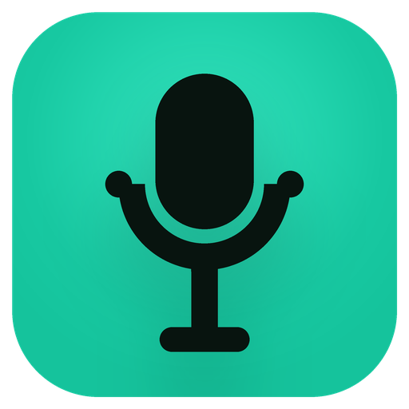

Willkommen bei NoType
Diktieren statt tippen, in jeder App. Die Spracherkennung läuft komplett auf deinem PC.
Kein Cloud-Dienst, kein Konto. Audio und Text verlassen deinen Rechner nie.
Mikrofon
Wähle das Mikrofon, mit dem du diktieren willst, und sprich kurz. Der Balken sollte ausschlagen.
Eingabegerät
Headset-Mikrofone liefern die beste Erkennung
Pegel
Sag ein paar Worte …
Hotkey & Modus
Mit dieser Tastenkombination startest du ein Diktat, egal in welcher App du gerade bist.
Tastenkombination
„Ändern“ drücken, dann die gewünschte Kombination.
Halten zum Sprechen
Taste gedrückt halten und sprechen. Beim Loslassen erscheint der Text. Empfohlen.
Drücken für Start/Stopp
Einmal drücken: Aufnahme läuft. Nochmal drücken: fertig. Für längere Texte.
Modell
Das Erkennungsmodell bestimmt Tempo und Genauigkeit. Für deine Hardware ist eines vorausgewählt.
Das Modell wird beim ersten Laden einmalig heruntergeladen. Danach läuft alles offline.
Probediktat
…
Perfekt! Genau so funktioniert NoType überall, wo du tippen kannst.
Fertig!
NoType läuft ab jetzt im Hintergrund. Du findest es unten rechts im Tray.
Mikrofon
Hotkey
Modus
Modell
Mit Windows starten
Nach jedem Neustart sofort bereit, ohne NoType selbst zu öffnen. Lässt sich in den Einstellungen jederzeit ändern.
Tipp: Im Overlay-Tab der Einstellungen wählst du das Aussehen der Aufnahme-Anzeige, unter „Eigene Begriffe“ hinterlegst du Namen und Fachwörter, damit sie richtig geschrieben werden.